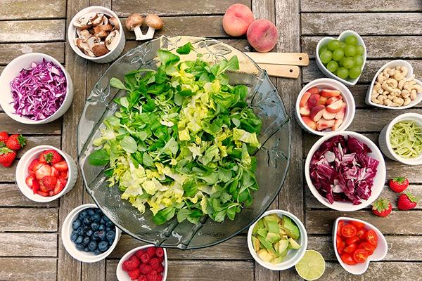

Правильное питание: с чего начать?
Вы наверняка не раз слышали расхожее выражение: «Мы – это то, что мы едим». И это действительно так. Выбор продуктов напрямую влияет на наше здоровье. Еда является источником стройматериалов для наших клеток, тканей и органов. Она обеспечивает жизнедеятельность организма, дает нам энергию и даже влияет на наше настроение. Именно поэтому правильное питание – одно из важнейших условий здорового образа жизни.
Кому стоит задуматься о переходе на правильное питание:
- Тем, кто хочет похудеть и избавиться от лишнего веса.
- Тем, кто решил встать на путь здорового образа жизни (ЗОЖ).
- Тем, кто занимается спортом и хочет поддерживать себя в хорошей физической форме.
- Тем, кто хочет избежать возможных проблем со здоровьем, вызванных неправильным питанием.
- Тем, кто уже имеет проблемы со здоровьем, вызванные неправильным питанием, и должен следовать разумной диете (проблемы ЖКТ, сердечно-сосудистые заболевания и др.)
- Тем, кто хочет приобщить себя и свою семью к здоровым привычкам.
Наиболее частой причиной перехода на правильное питание является желание похудеть. По статистике 54% мужчин и 59% женщин в России страдают лишним весом. Чаще всего избыточный вес является следствием плохих пищевых привычек, нарушения режима питания, неограниченное употребление высококалорийных продуктов, низкая физическая активность. Причем лишний вес – это не просто вопрос эстетики и красоты. Это вопрос здоровья и нормальной жизнедеятельности всех органов нашего тела.
Конечно, правильное питание (ПП) – это очень широкое понятие, которое включает в себя множество аспектов и точек зрения. Мы приведем лишь общие универсальные правила – они подходят практически для каждого (за редкими случаями, когда есть необходимость в исключении отдельной группы продуктов). В дальнейшем вы всегда можете оптимизировать свой рацион, исходя из особенностей своего организма и опыта потребления тех или иных продуктов.

ПЯТЬ ПРОСТЫХ ШАГОВ К ПП
Данный этап включает в себя пять простых советов, которые помогут вам сделать серьезный шаг в сторону правильного питания без особого погружения в теоретический материал. Даже следуя этим несложным правилам, вы сможете сбросить лишние килограммы, очистить питание и приучить себя к разумному потреблению пищи.
ШАГ 1: УБРАТЬ «ПИЩЕВОЙ МУСОР»
Самый первый шаг, который вам нужно сделать на пути к правильному питанию, это исключить из своего меню так называемый «пищевой мусор», а именно:
- сахар и сахаросодержащие продукты
- белую выпечку и белые мучные изделия
- колбасу, колбасные изделия, мясные полуфабрикаты
- фастфуд (картофель фри, гамбургеры, чипсы, снеки и т.д.)
- сладкие соки, газировки и лимонады
- майонез, кетчуп и ненатуральные соусы
Во-первых, это продукты с низкой пищевой ценностью, которые, не несут фактически никакой пользы организму. Во-вторых, это высококалорийные продукты, которые очень быстро откладываются в жир. В-третьих, большая часть этих продуктов не насыщает организм, поэтому вы будете постоянно чувствовать голод и съедать лишнюю норму еды. Очистив свой рацион от этой группы продуктов, вы уже сделаете огромный шаг к правильному питанию и похудению.
ШАГ 2: ИСКЛЮЧИТЬ АЛКОГОЛЬНЫЕ НАПИТКИ
Второй шаг предполагает исключение еще одной группы малополезных продуктов – алкогольных напитков. Мы не будем сейчас рассуждать о наличии или отсутствии вреда алкоголя при разумных ограничениях, и даже принимать во внимание возможные положительные свойства красного вина. При переходе на ПП мы рекомендуем отказаться от алкоголя совсем, хотя бы на период похудения. Почему лучше отказаться от алкоголя:
- Согласно исследованиям, алкогольные напитки действует на нейроны, контролирующие аппетит, что заставляет организм чувствовать сильный голод.
- Даже небольшая доза алкоголя нередко провоцирует пищевой срыв, когда вы из-за потери контроля начинаете «сметать» полезные и неполезные продукты в больших количествах.
- Алкоголь задерживает воду, поэтому на следующий день на весах вы фактически гарантированно увидите «привес», что очень демотивирует.
- Алкоголь замедляет обмен веществ, поэтому процессы похудения в вашем организме будут проходить с более низкой скоростью.
- Алкогольные напитки очень часто идут в комплекте с закусками и снеками, которые добавят лишних калорий.
Однако помните, что первые месяцы перехода на правильное питание вы наиболее уязвимы. Пищевые привычки еще не устаканились и риск срыва очень высок, поэтому лучше избегать продуктов-провокаторов, которые «расхолаживают» и расслабляют. И алкоголь как раз из таких.
ШАГ 3: НАЛАДИТЬ ПИТЬЕВОЙ РЕЖИМ
Третий шаг на пути к правильному питанию – это наладить питьевой режим или, иначе говоря, начать пить воду. Этот шаг с одной стороны очень простой, но вместе с тем – очень эффективный для похудения. Во-первых, вода участвует практически во всех биохимических процессах в организме, в том числе и в расщеплении жира. Во-вторых, вода подавляет аппетит и не позволяет съесть лишнего. Польза воды в процессе похудения неоценима, при этом ее энергетическая ценность – 0 калорий
Приучите себя пить 1,5-2 литра воды в день (это примерно 6-8 стаканов по 250 мл). Первое время вам будет казаться, что такое количество воды нереально выпить за день, но постепенно вы сможете сделать это своей полезной привычкой.
- Выпивайте один стакан воды после пробуждения.
- Выпивайте по одному стакану воды перед приемом пищи (за 20-30 минут)
- Выпивайте по одному стакану воды до и после физических нагрузок.
- Выпивайте один стакан воды за 30-60 минут до сна.
Для того чтобы не забывать пить воду, поставьте себе напоминалку на телефон. Есть очень много удобных мобильных приложений, которые напоминают о питьевом режиме. Также старайтесь всегда держать при себе бутылочку воды (на работе и дома).
ШАГ 4: НАЛАДИТЬ РЕЖИМ ПИТАНИЯ
Четвертый шаг будет одним из самых сложных, но и самых важных одновременно. На этом этапе многие спотыкаются, и либо бросают идею ПП, либо скатываются в жесткие диеты. Именно поэтому на первом этапе перехода на правильное питание лучше наладить хотя бы режим питания в целом. Тонкости распределения белков, углеводов и жиров будут рассмотрены на следующих этапах. Итак, общий режим питания будет выглядеть так:
- Полноценный завтрак (7:00)
- Перекус №1 (10:00)
- Обед (13:00)
- Перекус №2 (16:00)
- Ужин (19:00)
- Легкий перекус за 1 час до сна: кефир, творог (21:00)
Время указано условно, с учетом подъема в 6:00 и отправление ко сну в 22:00. Если вы встаете позже или раньше, то скорректируйте время под свое расписание.
Главный базис правильного питания: питаться каждые 3 часа небольшими порциями (200-250 г). Это значит, что вы не делаете больших перерывов между едой. Вы не забываете про завтрак (завтрак должен быть в течение часа после пробуждения). Вы не морите себя голодом между приемами пищи, а делаете питательные перекусы. Вы забываете про правило «не есть после 18:00», и всегда ужинаете. Пропуски завтраков, скудные обеды и отмены ужинов замедлят обмен веществ и с вероятностью 99% приведут вас к пищевому срыву.
ШАГ 5: НАСТРОИТЬСЯ НА СМЕНУ ОБРАЗА ЖИЗНИ
Если вы хотите не просто похудеть, а сохранить полученный результат и поддерживать его в течение жизни, то вам нужно запомнить еще один важнейший принцип правильного питания. Правильное питание должно стать частью вашей жизни, а не краткосрочным этапом для похудения. Настройтесь менять пищевые привычки навсегда. Ваш организм отблагодарит вас не только стройным телом, но и крепким здоровьем.
Сейчас же давайте запомним несколько важных правил, которые помогут вам грамотно распределить продукты в течение дня так, чтобы это было полезно для организма и эффективно с точки зрения похудения.
ПРАВИЛА МЕНЮ НА ПП:
- Наиболее оптимальный вариант завтрака – это сложные углеводы (+ немного белка). Поэтому начните приучать себя к утренним кашам
- В обед также нужны сложные углеводы + белок + немного овощей. В принципе стандартным вариантом будет гарнир с мясом или рыбой и овощной салат (либо тушеные овощи).
- В качестве идеального ужина будет птица или рыба (можно яйца) + овощи (свежие или приготовленные).
- Простое правило: с утра к вечеру нужно уменьшать количество потребляемых углеводов и увеличивать количество потребляемых белков. То есть в начале дня организму нужны углеводы для энергии, в конце дня – белки для регенерирующих процессов, которые проходят ночью в организме.
- Лучше не употребляйте быстрые углеводы и фрукты после 16:00 (или во второй половине дня, если у вас нестандартное расписание). Исключение можно сделать для зеленых яблок.
- Между приемами пищи у вас должны быть перекусы. Здесь нет строгих рамок по продуктам, но желательно, чтобы они включали в себя и белки, и углеводы.
- После ужина можно сделать перекус за час до сна, чтобы не почувствовать внезапный приступ голода, когда ляжете спать. Идеальный вариант – это кефир или творог. Лучше не есть на ночь продукты с высоким содержанием жиров или углеводов.